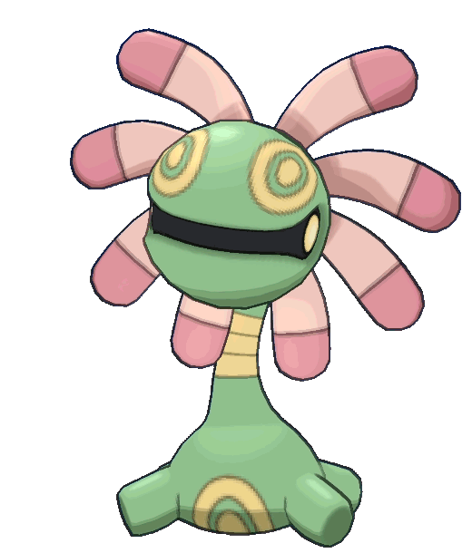

Sam's Blog
My Competitive Pokemon Team
March 19, 2022 by Sam
The purpose of this blog post is to demonstrate my ability in using HTML and CSS to create this page layout. However, I actually need content to fill this blog post, and can't just leave empty space. To solve this, I've decided to write about the current team I am using for competitive matches in Pokemon Sword's online multiplayer.
Miltank
Miltank is primarily a support player for the team. It utilizes its high speed to quickly hit the opponent with Icy Wind and apply a debuff to them, or it supports its ally with the move Helping Hand and allows them to deal more damage.
Zacian

Zacian's role in the team relies on its monstrous attack stat. Zacian's power, when supported by Miltank, is enough to take out most opponent's pokemon in one attack.
Cradily
Cradily serves as a defensive player in the team, and is able to tank many attacks. With its high defense stats, Cradily is able to protect its teammates from being threatened.
About Me:
My name is Sam Mankowski. I am currently in Antra's SEP training program to become a front end developer. In my free time, I enjoy playing games such as pPokemon, or going snowboarding.